Где найти черновики в разделах Инстаграма: Сторис, Публикации

Найти, где черновик в Инстаграме* не так сложно – они есть в публикациях, в разделе Истории и в Reels. Владелец страницы сможет записать клип, оставить и добавить контент после.
Где найти и посмотреть Черновики в публикациях Инстаграма*
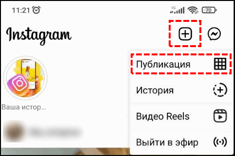
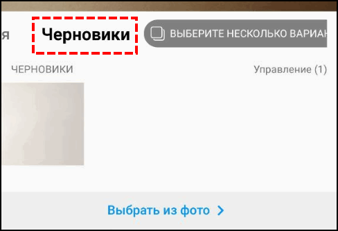
Черновик публикации должен быть создан перед тем, как его искать и смотреть! Если пользователь создает публикацию, то он может отменить её на этапе редактирования описания и перенести во вкладку «Черновики». Это значит, что в дальнейшем запись можно восстановить, чтобы продолжить заполнять описание. К публикации можно добавить текстовое описание и оно будет сохранено. Но на раздел «Черновики» влияет наличие временных файлов. Разделы, где есть черновики:
- публикации. Сохранить изображение, создать до 10 черновиков;
- Истории. Сохраняется последний пост, который не был опубликован владельцем аккаунта;
- Reels. Можно сохранить короткое видео и приступить к его размещению в дальнейшем.
Но стоит быть осторожным при добавлении текста в описание, создавая публикацию. Информация может исчезнуть после сохранения черновика, поэтому лучше дополнительно копировать текст.
Также есть и список в Истории: автору нужно переносить все последние публикации в «Оставить». Как и в публикациях, максимальное количество – 10 штук.
Как сохранять
Сохраняются черновики в Инстаграме* после того, как пользователь внес какие-либо изменения и добавил изображение. Нужно несколько раз нажать «Назад», чтобы запись была отправлена во временное хранилище. Как сохранить публикацию в Черновики:
- Зайти в Инстаграм* – нажать по кнопке: «Создать пост».
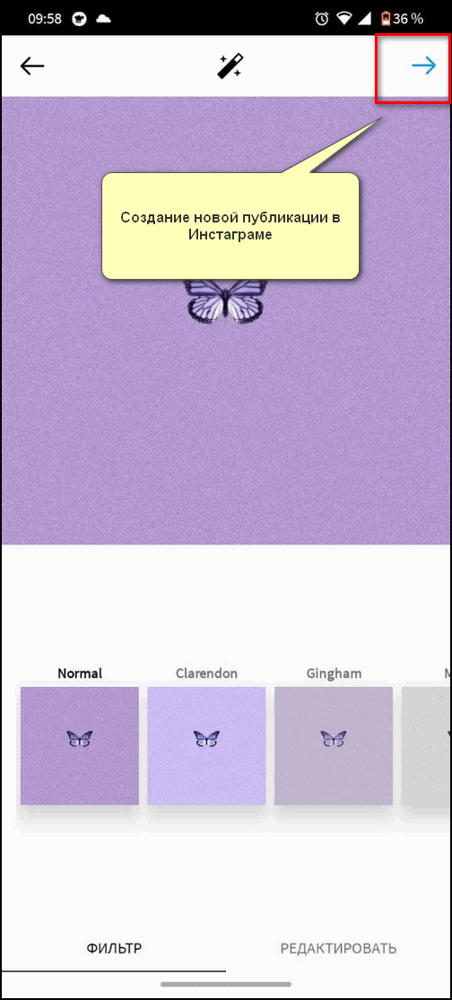
- Выбрать фотографию или создать – перейти к редактированию «Далее».
- Добавить любые слова в описание или выбрать геолокацию.
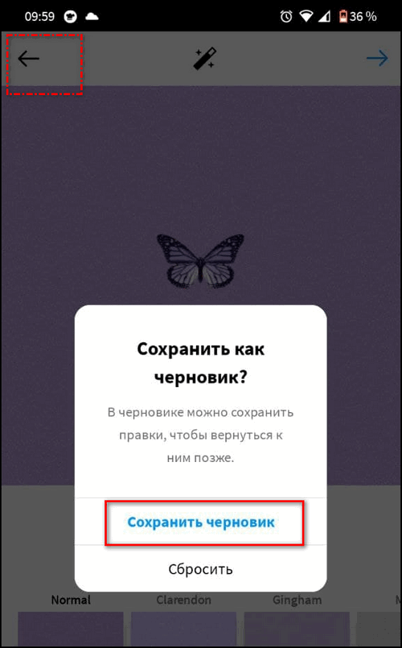
- Нажать: «Назад» - указать вариант: «Сохранить как черновик».
Пользователь будет перенаправлен на стандартную страницу с добавлением фотографии. Теперь можно выбирать новую картинку, описание и загрузить в Черновики.
Как удалять
В разделе: «Черновики публикаций» можно выбрать «Управление». Это категория, где автор может удалить уже неактуальные записи.
Редактировать список Черновиков в Инстаграме*:
- Зайти в социальную сеть – выбрать: «Добавить публикацию».
- Сверху появится новая подкатегория: «Черновики».
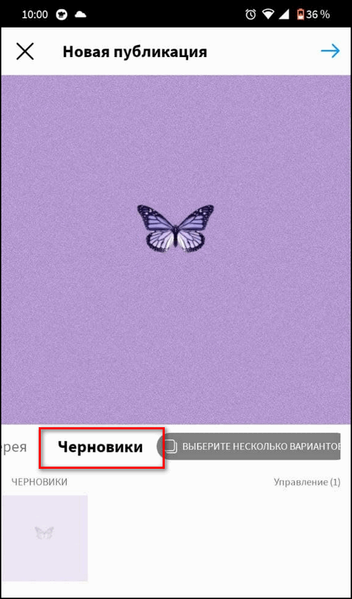
- В правом верхнем углу «Управление» - выбрать записи.
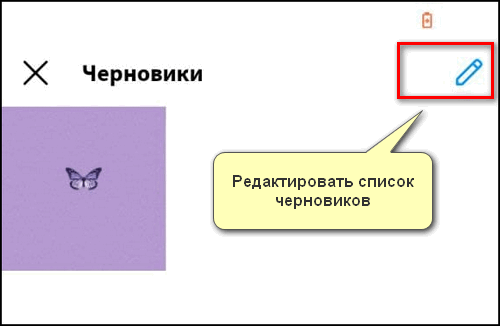
- Нажать: «Удалить».
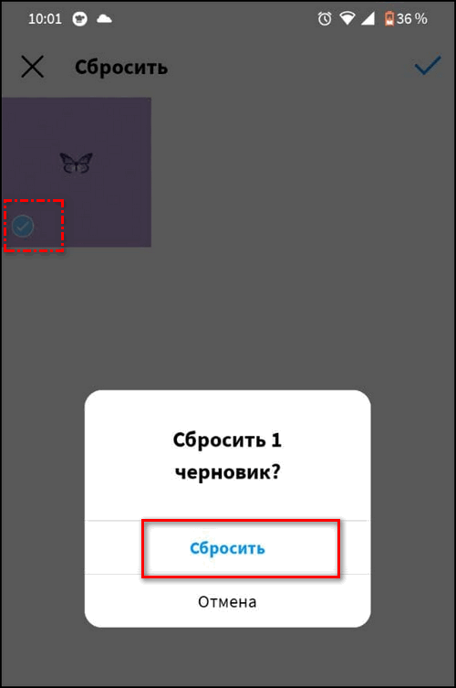
Посты будут удалены из временно сохраненных и их уже не получится восстановить. Создавая черновик нужно помнить о том, что удалять оригинал записи с памяти смартфона не нужно. В этом случае пост может исчезнуть из списка временных.
Черновики в Истории Инстаграма*
Никто не видит ваши Черновики до тех пор, пока ими не поделиться. То же касается и временного хранения: записи доступны к просмотру только владельцу аккаунта. Как создать черновики в Историях:
- Перейти к записи Сторис – сделать фото или видео.
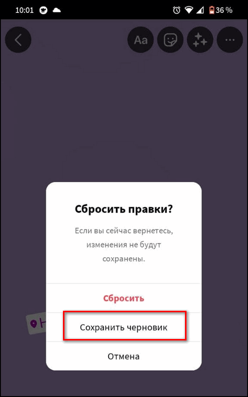
- Далее – добавить небольшой элемент редактирования (можно поставить точку с помощью инструмента «Карандаш»).
- Назад – выбрать: «Сохранить в Черновики».
Как и в случае с публикациями, пользователь может вернуться к записи и продолжить редактирование. Но в случае с временными файлами для Сторис, владелец профиля может только добавить оформление. Это текст, стикер или маска.
Убрать или восстановить Черновик
Черновики в Историях безвозвратно удаляются в течение семи дней после их создания. Поэтому владельцу профиля не нужно самостоятельно чистить раздел: открыв вкладку он сразу увидит количество дней, оставшихся до удаления. Убрать черновики из Истории:
- Зайти в Истории – нажать: «Черновики».
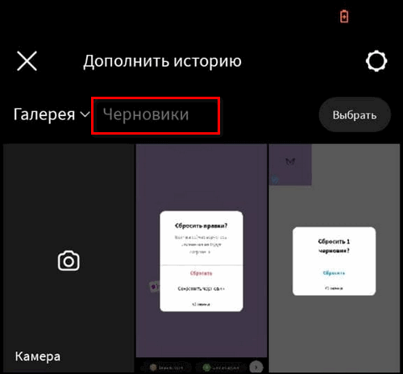
- Сверху появится кнопка в виде: «Копировать».
- Выбрав её, будут выделены все созданные временные файлы.
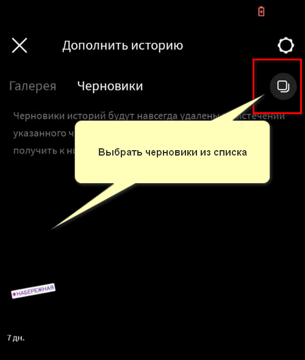
- Снизу появится кнопка: «Удалить».
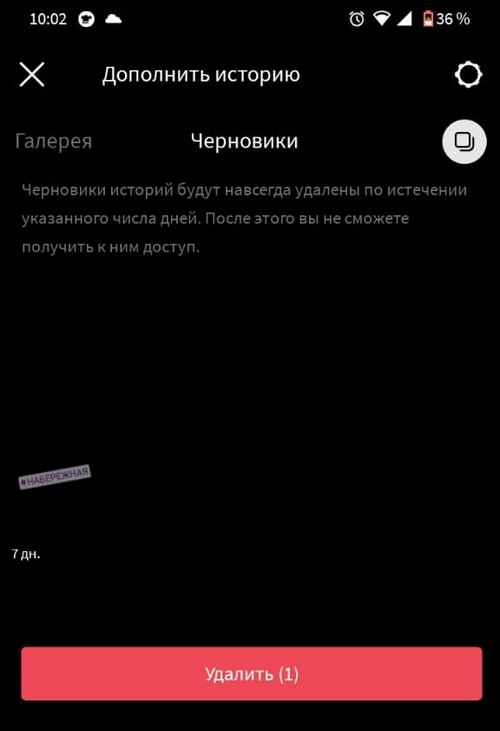
Или, пользователь может выбрать всего одну Историю, перейти к её редактированию:
- Выбрать пост – перейти к редактированию.
- Нажать сверху: «Назад» - Удалить.
Таким способом можно удалить всего один временный файл. Функция выделения количества публикаций есть и в разделе «Управление».
Восстановить удаленные черновики возможно лишь в случае, если пользователь предварительно сохранил их на мобильное устройство. То есть, создавая запись, он выбрал сверху опцию: «Сохранить» и пост был перенесен.
Черновики Reels
В Рилс можно также размещать черновики, а после размещать в своей Ленте. Пользователь может только разместить запись, сделать описание. И еще один пункт: если выйти из аккаунта или удалить приложение – восстановить материалы не получится. Как записать черновик:
- Зайти в Инстаграм* – нажать по кнопке: «Reels».
- Сделать публикацию – нажать сверху: «крестик».
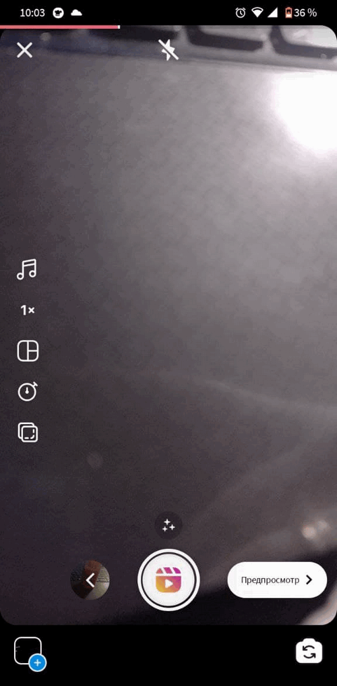
- Сохранить в черновик – появится меню записи следующего отрезка.
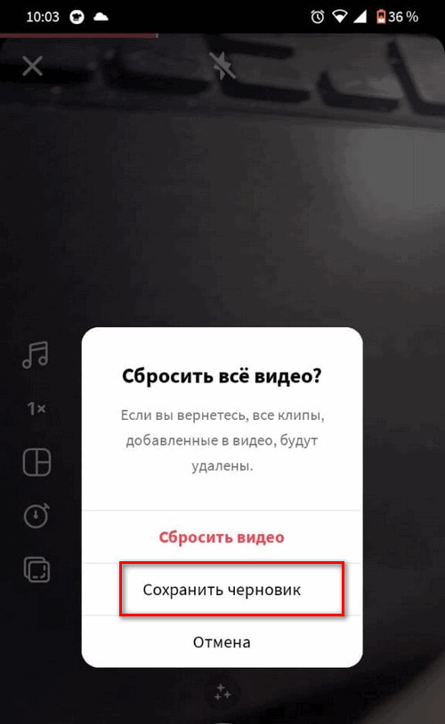
- Пользователь может закрыть меню записи и перейти к черновикам в дальнейшем.
Чтобы разместить запись, которая была записана в черновиках, нужно перейти в соответствующий раздел:
- Зайти в Reels – нажать по значку: «Добавить из Галереи».
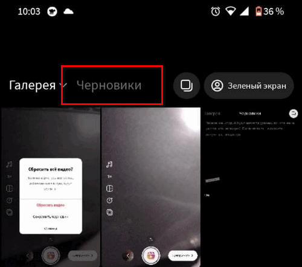
- Сбоку: «Черновики» - выбрать запись, которую нужно доснять или отредактировать.
- Выбрать пост – появится меню с добавлением описания.
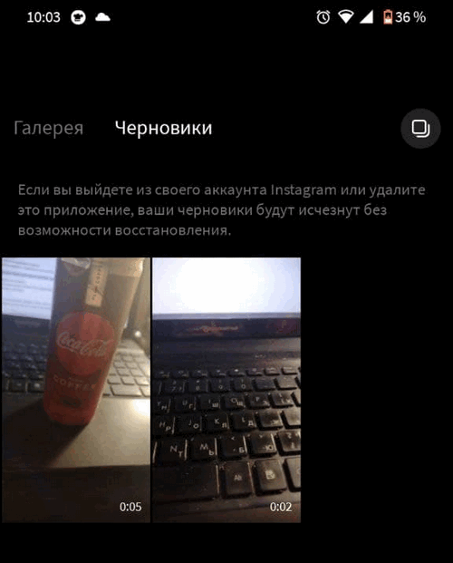
- Нажать сверху: «Редактировать».
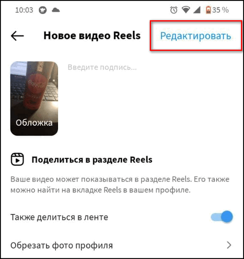
Таким способом можно дописать оставшуюся часть времени, добавить маску, текст на видео. Если нажать «Назад» то появится возможность добавить новую часть клипа. Но лишь в том случае, если он не был записан до максимальной продолжительности.
Почему в Инстаграме* исчезли черновики
Удаляются черновики в Инстаграме* вне зависимости от действий пользователя. В социальной сети есть несколько разделов, которые могут быть стерты в течение определенного времени: 30 дней или 7. Это необходимо для того, чтобы пользователи не хранили слишком много данных.
Основные причины, почему исчезли черновики:
- пользователь недавно очищал временное хранилище и данные;
- приложение было удалено и установлено заново;
- удален оригинал поста:
- прошел максимальный срок хранения данных.
В последнем случае восстановить не получится по той причине, что социальная сеть не является хостингом для хранения, а следовательно – не несет ответственно за утерянную информацию. Если удален оригинал публикации, то также вероятны ошибки. Поэтому до размещения лучше хранить исходники в Галерее смартфона.
Можно ли скачать черновик на телефон
Если черновик был записан в Историях или Reels, то его можно получить на смартфон. В случае с публикациями: только после размещения поста. Чтобы все опубликованные фото или видео были сохранены на устройство, нужно включить в настройках «Хранить исходники». После добавления записи её копия будет перенесена на телефон. Как получить Черновики из Reels:
- Перейти в раздел – вкладка: «Черновики».
- Выбрать нужную запись – Далее.
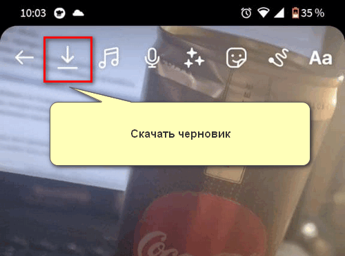
- Появится меню с инструментами – нажать: «Сохранить» по стрелочке.
Видеоклип будет отправлен на смартфон. В дальнейшем, автор может его редактировать с помощью других приложений и поделиться в социальной сети. То же есть и для Историй: перейти к разделу и скачать запись.